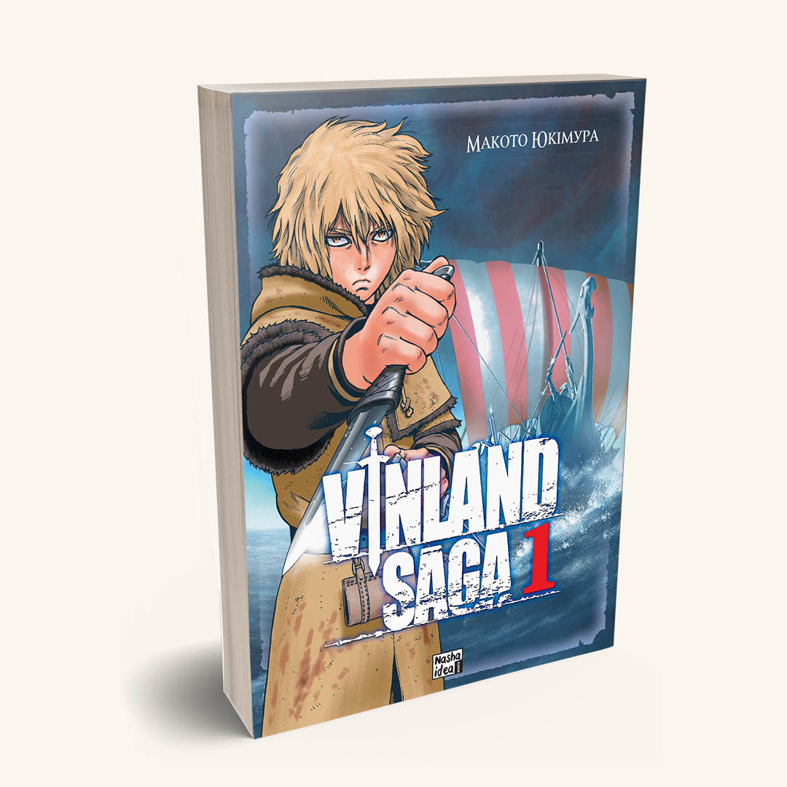
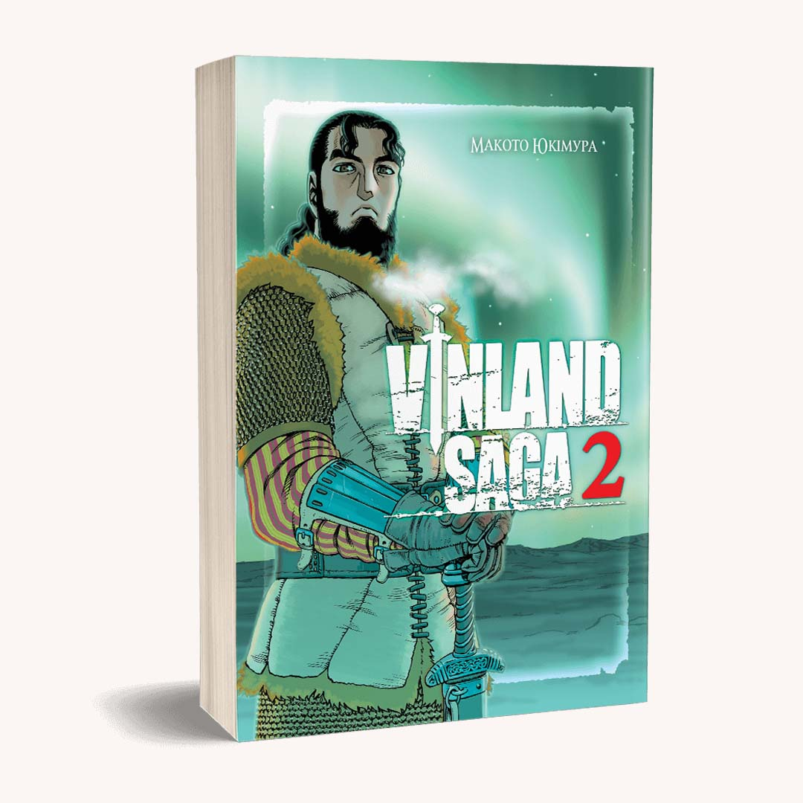
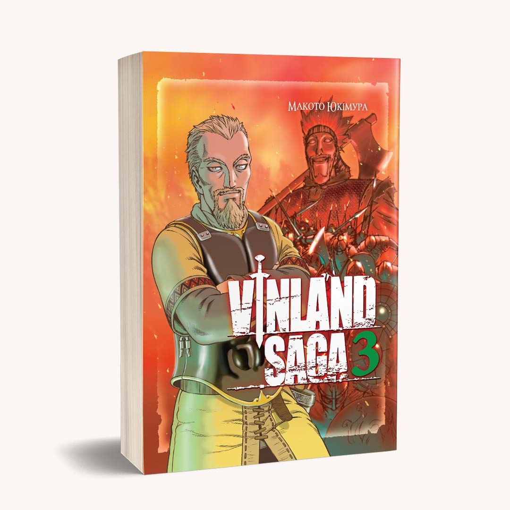

| Сага про Вінланд, Том 1 | Сага про Вінланд, Том 2 | Сага про Вінланд, Том 3 |
|---|---|---|
|  |  |  |
| Придбати | Придбати | Придбати |
Суворий Вінланд – віддалений куточок Північної Америки, якого першими відкрили вікінги, мужні скандинавські воїни, звиклі до суворих умов. Вони мали б триматись разом, плечем до плеча. Тільки буває і не так. |
Торсова сім’я була щасливою: затишна хатина на узбережжі Ісландії, батько, який бачить, як ростуть його діти, далеко закинувши меча. Тільки «йомського троля», одного з найкращих воїнів знову викликають у похід, нагадуючи йому про те, що 15 років тому він безславно втік. Так, втік з дружиною, щоб бути тут щасливим. |
Аскеллад заслуговує смерті. Завжди заслуговував, навіть до того, як звів з життя Торфіннового батька. Тільки хлопець тоді зовсім не думав, що добрий знайомий може таке вчинити зі славетним воїном. Він все бачив — і одразу мовби постарів на кілька років, спалахнувши жагою помсти. Та поки що надто малий. І помста має бути холодною, холоднокровною. |